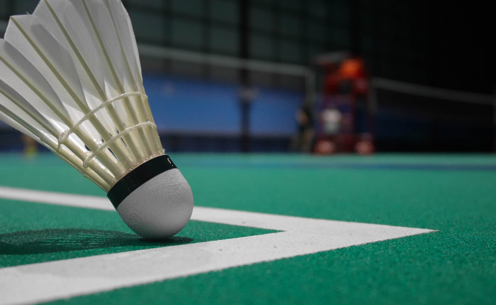
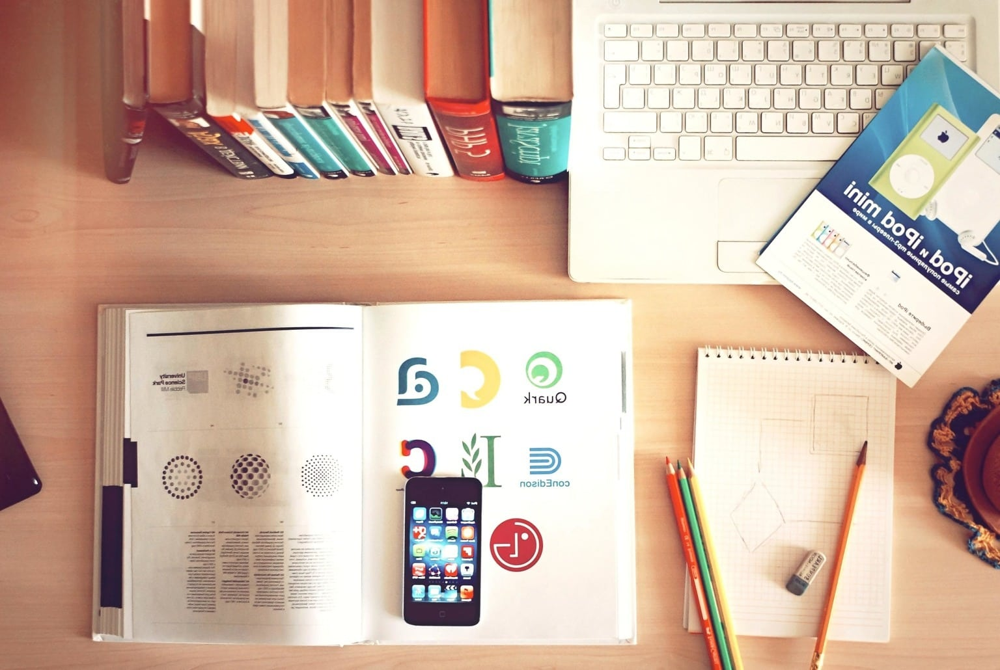
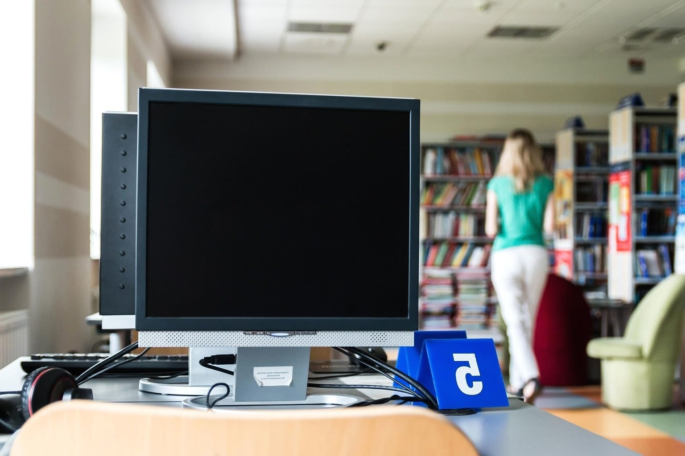
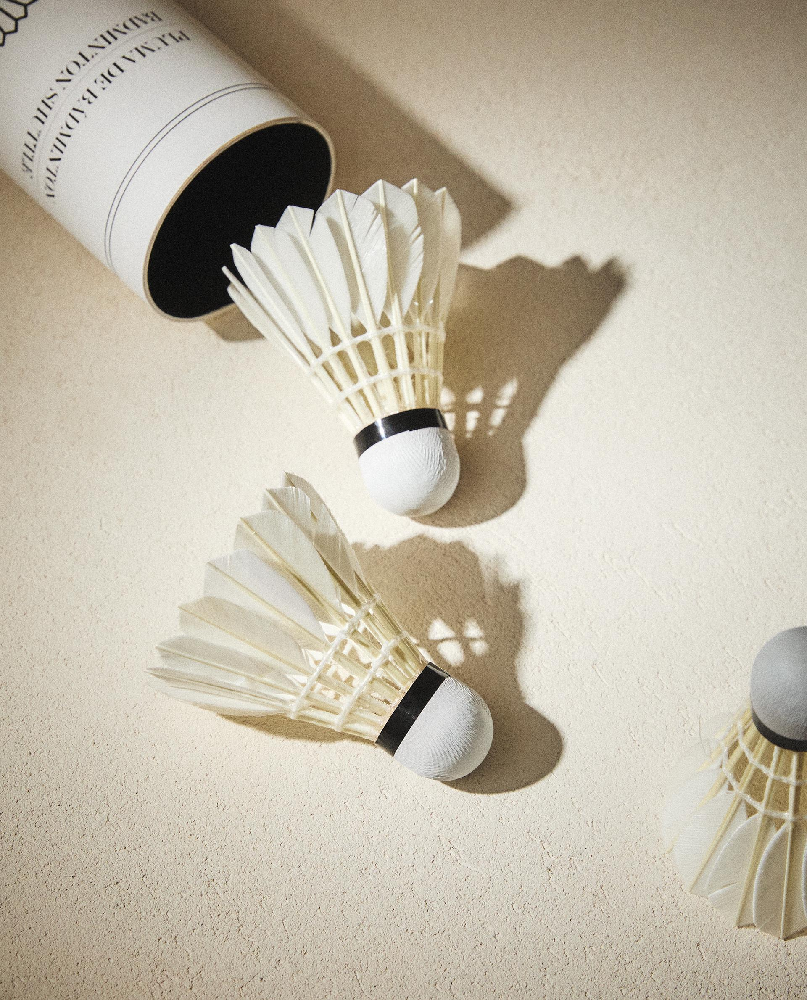

Sport och
fysisk
aktivitet:
Jag gillar att hålla mig aktiv och brukar spela badminton en gång i veckan med mina vänner. Det hjälper
mig att slappna av, fokusera bättre och utveckla laganda.
Läsning och lärande: Jag är intresserad av att läsa tekniska böcker och artiklar för att
hålla mig uppdaterad om den senaste utvecklingen inom IT och systemutveckling.



